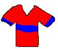

それでは、この様なシャツがあると仮定しましょう:

そのシャツは明らかにlojeとlasoから構成せれています。しかしながら、それをlen loje lasoとは言えません、というのもこのレッスンで2、3分前に御覧になった様にそれは”紫色のシャツ”を意味するからです。ですので、2つの色を分離するためにenを使用し、そして2つの異なる色があるにも関わらず、それらは両方ともシャツを修飾しているということを示すためにpiを使用しなければなりません:
len pi loje en laso -- 赤と青のシャツ(shirt of red and blue)
御理解頂けましたか?今度はもしここでpiを用いなければどういうことになるか見てみましょう:
len loje en laso li pona. -- 赤いシャツと青色は良いです。(A red shirt and blue are good.)
piなしでは、lasoは単にそこに留まり、そしてそれは何も修飾しません。ですので、その文は正しくありません。lojeもlasoも両方ともlenを修飾するということを示すためにpiを使用しなければなりません。
sitelenはそれと作成出来る複合名詞に最も有効です。sitelen tawa ("動画(motion picture)")は映画やテレビショーを意味するのに使用されます。ここに2、3の例があります:
sitelen tawa The Simpsons li pona tawa mi. -- テレビショーのシンプソンズが好きです。(I like the TV show The Simpsons.)
sitelen tawa The Godfather li pona kin. -- 映画ゴッドファーザーはまた良いです。(The movie The Godfather is good also.)
sitelenはまた"地図"を意味するのにmaと共に使用することが出来ます
o pana e sitelen ma tawa mi.
sitelen maはもちろん"土地の絵(picture (of) land)"を意味します。
練習
日本語からトキポナにこれらの文を訳してみて下さい。
青いバッグを見ません。(I don't see the blue bag.)
小さな緑色の人が空から来ました。(A little green person came from the sky.)
紫色が好きです。(I like the color purple.)
空は青いです。(The sky is blue.)
その赤い虫を見てください。(Look at that red bug.)
その地図が欲しいです。(I want the map.)
X-Filesを見ますか?(Do you watch The X-Files?)
何色が好きですか?(Which color do you like?)
考えて下さい: "どの色があなたにとって良いですか?(Which color is good for you?)"
はい、それでは今度はトキポナから日本語にこれらの文を訳してみて下さい:
suno li jelo.
telo suli li laso.
mi wile moku e kili loje.
ona li kule e tomo tawa.